PRIME: Process Real-time Intelligence for Manufacturing Excellence
Milestone II: UI/UX Design
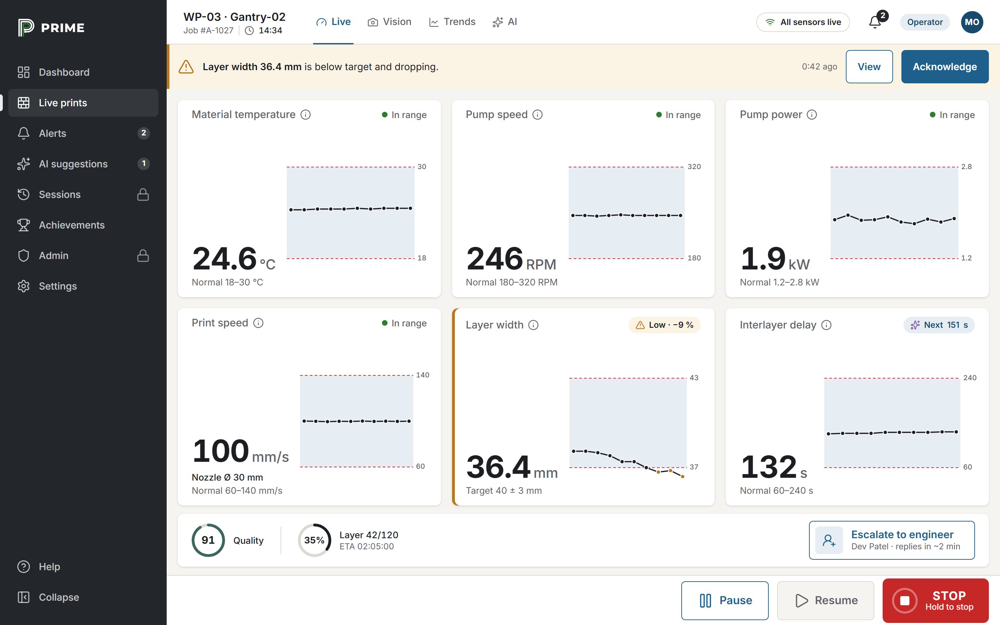
Team: Kasra Banijamali · Carlos Manosalvas
Professor: Dr. Nash Mahmoud
CSC 4330 Software System Development · Milestone #2 · Fall 2026
Figma: [Figma link added after import]
2.Color Palette
Sixteen colors from our Figma frame plus one derived warning tint, grouped by job. A warm, quiet base keeps attention free for the moments that need it; blue only marks things you can act on.
Neutrals
canvas#F5F4F1
App background; warm off-white, like cured concrete
surface#FFFFFF
Cards, panels, modals
border#DCD9D3
Dividers, chart grid, disabled fills (never text)
text#1C1E21
Primary text and live values · 15.2:1 on canvas
text-muted#5F6368
Units, ranges, captions · 6.1:1 on white
charcoal#23272B
Sidebar, tablet top bar, coach marks, toasts
Brand and Interaction
brand-600#1F5F8B
Primary buttons, links, selected tab, focus · white 6.8:1
brand-700#174A6D
Hover / pressed, report headings, logo
brand-50#E6EEF4
Selected rows, AI cards, chart target band
Status
critical#C62828
Out of range, sensor lost, STOP button (ISO 3864)
critical-50#FDECEA
Critical banner and card background
ok#2E7D32
In range, connected, success; shown small, never as big fills
ok-50#E8F5E9
Success toast, "decision applied"
warn-50#FBF3E4
Warning banner background (tint derived from viz-ochre)
Data Visualization
viz-teal#3C665E
Second measured series (layer height, pump power)
viz-violet#7E57A6
AI predictions (dashed) and confidence; no status meaning
viz-ochre#B7791F
Third series and warning zones; icons and borders only, never text
Why these colors
Calm until it matters. Following ISA-101 high-performance HMI practice, the normal state is warm gray and white. Saturated color appears only when an operator must act, so it is never ignored.
Blue means "you can act here." Steel blue from the logo is reserved for buttons, links and focus. Structural surfaces use charcoal so blue never gets diluted.
AI advises, people decide. Predictions are always violet and dashed, so a model suggestion is never confused with a measured value or an alarm.
Never color alone. Every status pairs color with an icon and a text label, which keeps our red/green pair readable for the ~8 % of men with color-vision deficiency.
All text/background pairs checked: WCAG 2.1 AA. Ochre fails text contrast on white (3.6:1), so warning text stays in text on warn-50.
PRIME · Milestone II · UI/UX Design2
3.Lo-Fi Wireframes & Navigation Routes
We sketched the seven main screens on paper together, then redrew them digitally so every route stays readable. Arrows show how people move between screens; each label names the trigger.
Team photo with the paper sketchesPaper lo-fi session · Oct 10, 2026 · to be added by the team
Navigation routes · the 7 main screens · dashed = role-restricted (Engineer / Manager)
PRIME · Milestone II · UI/UX Design3
4.Hi-Fi · Home
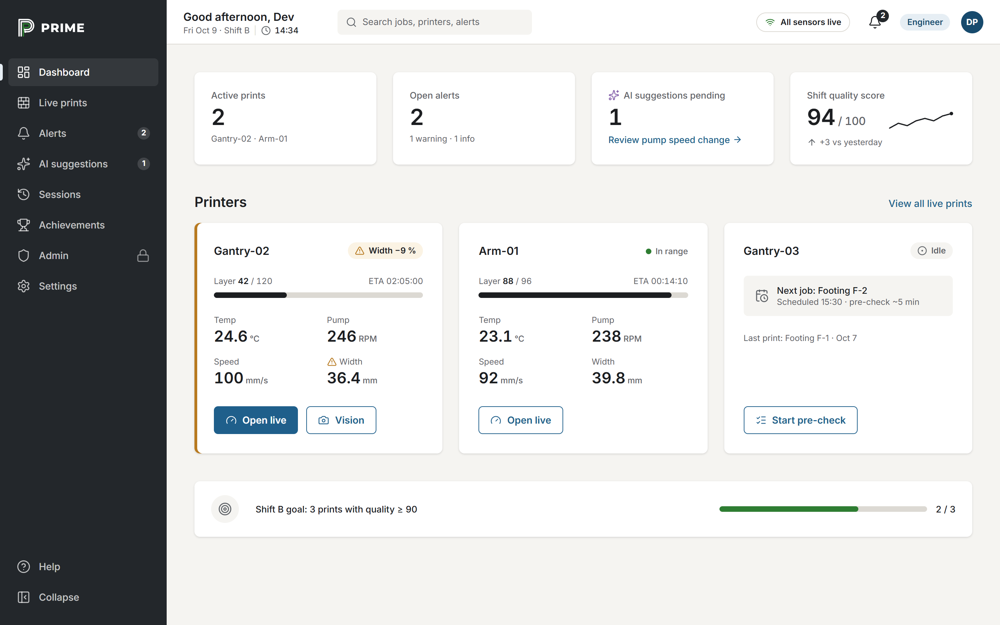
Home / Dashboard · /dashboard · US-03, 04, 06
1Color only where it matters: one warning; everything else stays calm.
2A waiting AI suggestion is one click away.
3A shared team goal instead of an individual leaderboard.
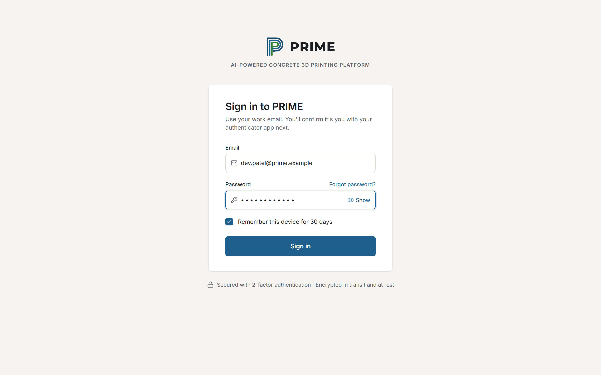
Login · /login · US-01
1Remember this device for 30 days: fewer codes with gloves.
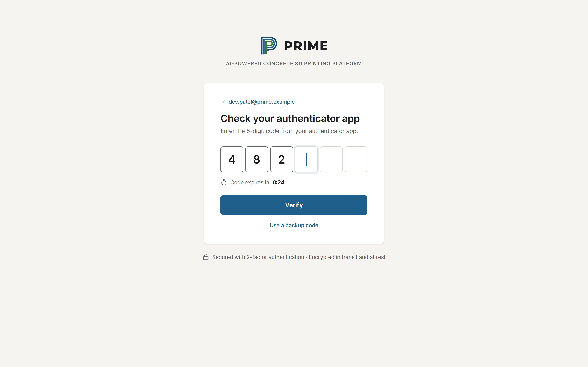
2-factor code · /login/verify · US-01
1Large 56 px code boxes with a visible expiry timer.
PRIME · Milestone II · UI/UX Design4
5.Hi-Fi · Core I: The Live Print
Live Print Monitor · /prints/:jobId/live · US-03, 04, 06, 07
1Only the out-of-range value gets color, icon and label.
2Pause · Resume · Hold-to-STOP sit in the same place on every print screen.
3One tap reaches the engineer.
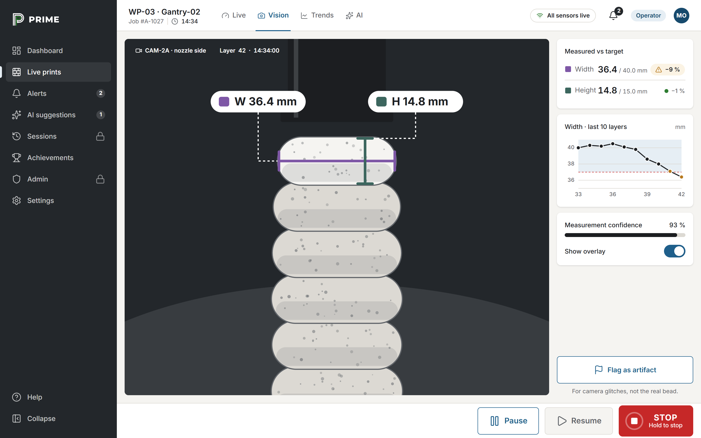
Vision · /prints/:jobId/vision · US-05
1Width and height measured on the live bead.
2Flag a camera glitch instead of acting on it.
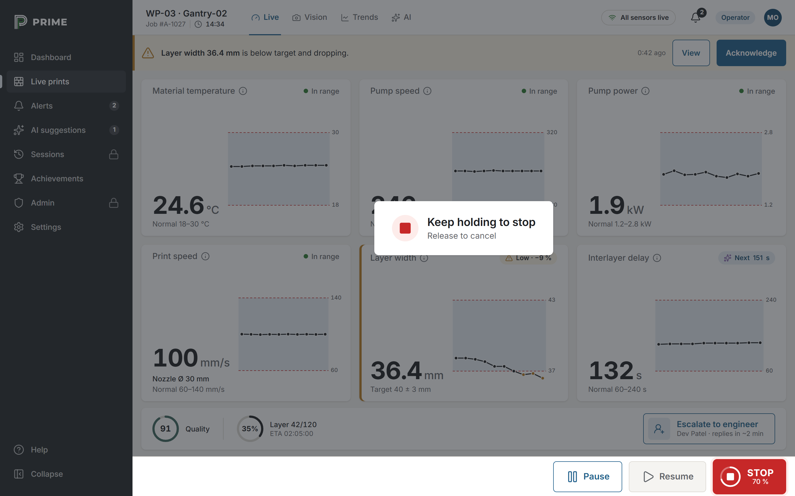
Hold to stop · /prints/:jobId/live · US-07
1A 1.5 s hold fills a ring; letting go cancels.
PRIME · Milestone II · UI/UX Design5
6.Hi-Fi · Core II: Decide and Report
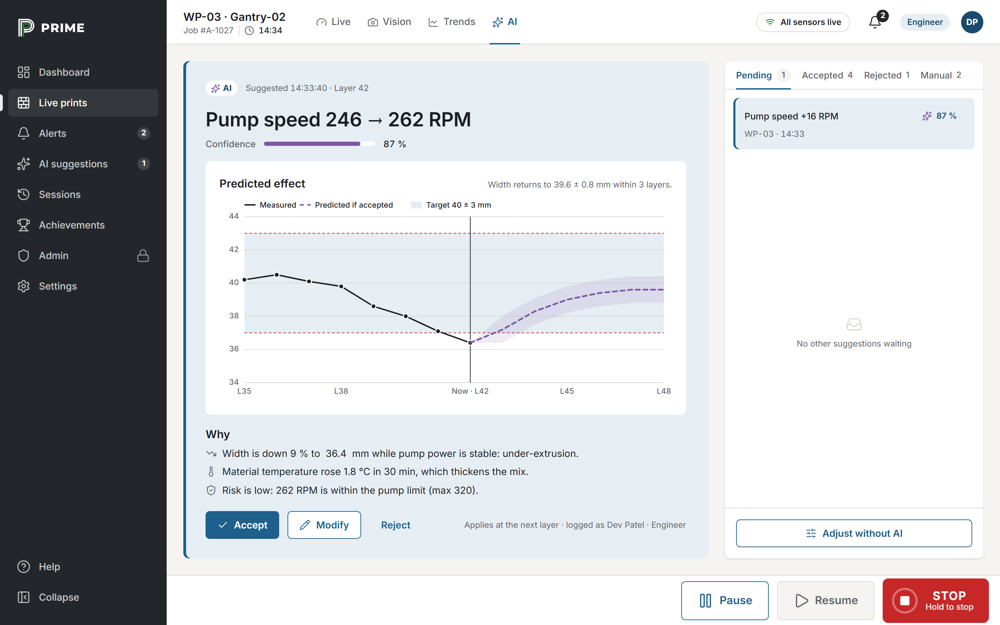
AI Recommendations · /prints/:jobId/ai · US-09, 10, 11
1The predicted effect is shown before anyone decides.
2Reasons in plain language, with the risk.
3Accept, modify or reject; every choice is logged.
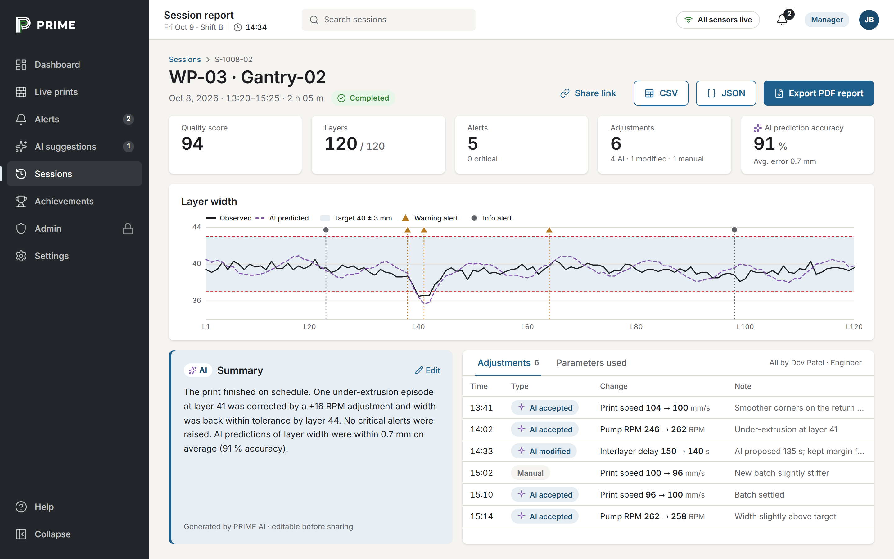
Session Report · /sessions/:id/report · US-12, 13
1Export CSV, JSON or PDF (Manager / Engineer only).
2Alerts overlaid on the layer chart.
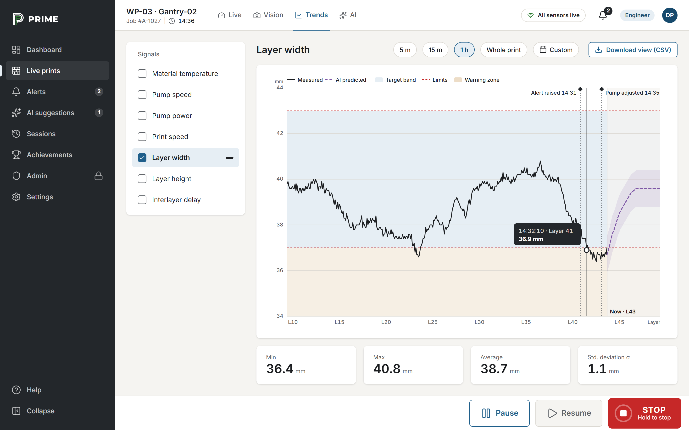
Trends · /prints/:jobId/trends · US-08
1Any signal over any time window.
2Events and the AI prediction on one chart.
PRIME · Milestone II · UI/UX Design6
7.Onboarding
First sign-in takes about three minutes and can be skipped or resumed. It explains roles before anyone meets a locked button, and lets operators practice stopping a print safely.
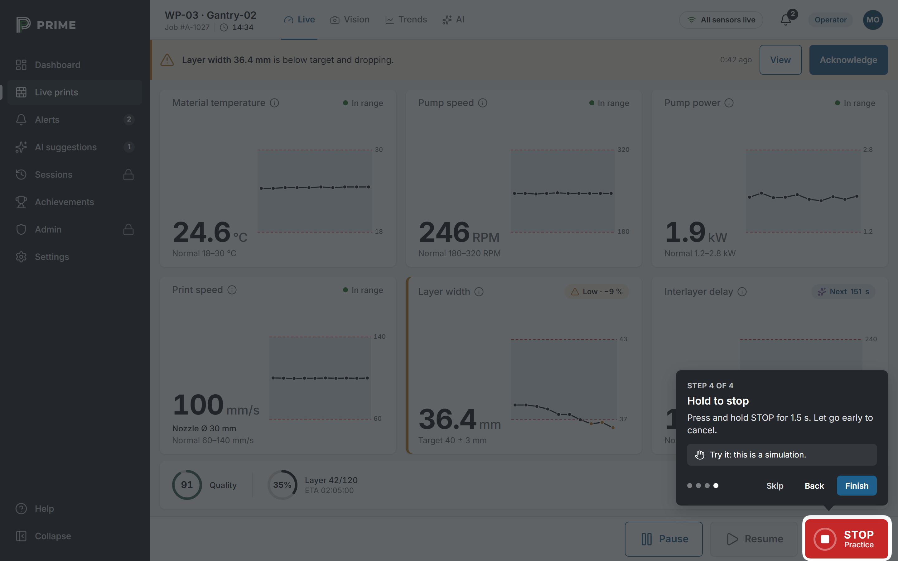
Guided tour · step 4 of 4 · /onboarding/tour · US-06, 07
1Practice hold-to-stop in a simulation, on the real Live Monitor.
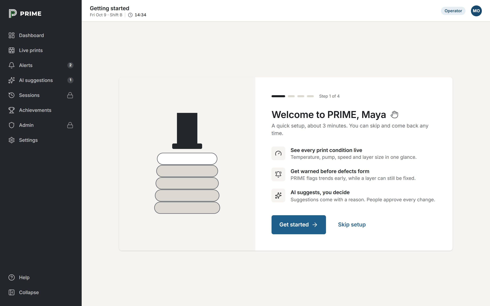
Welcome · /onboarding/welcome · first sign-in
1About 3 minutes; skip any time.
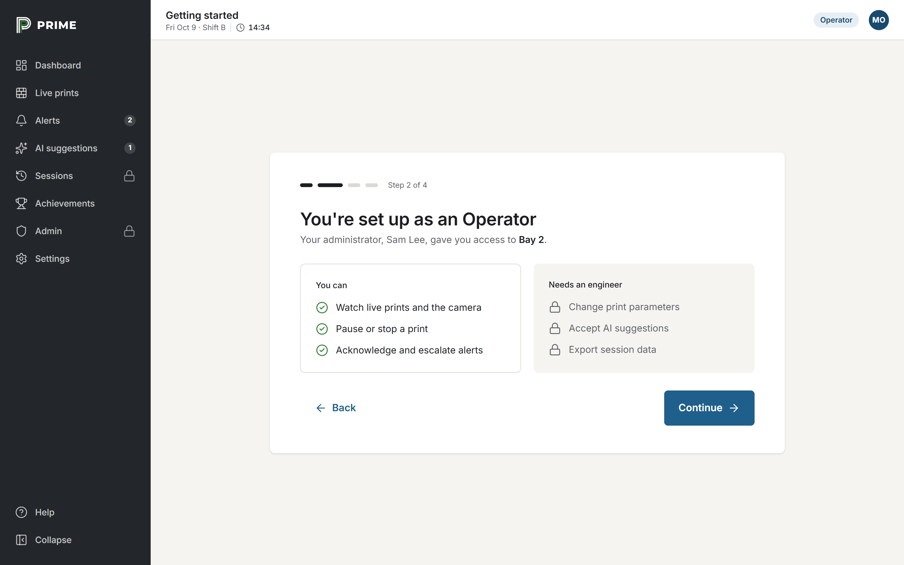
Your role · /onboarding/role · US-02
1Shows what needs an engineer before users hit a lock.
PRIME · Milestone II · UI/UX Design7
8.Cool Features: Nudges & Gamification
Rewards attention and quality, never speed. Goals are shared by the team, and nudges stay calm: one at a time, gone after 8 seconds, never over the controls.